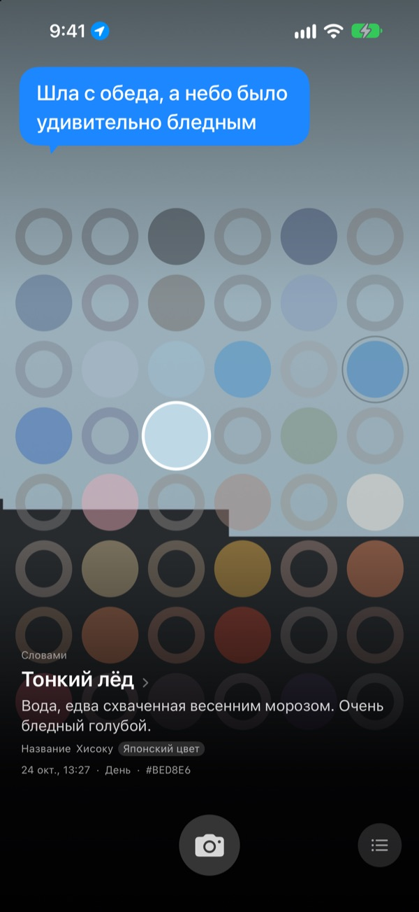
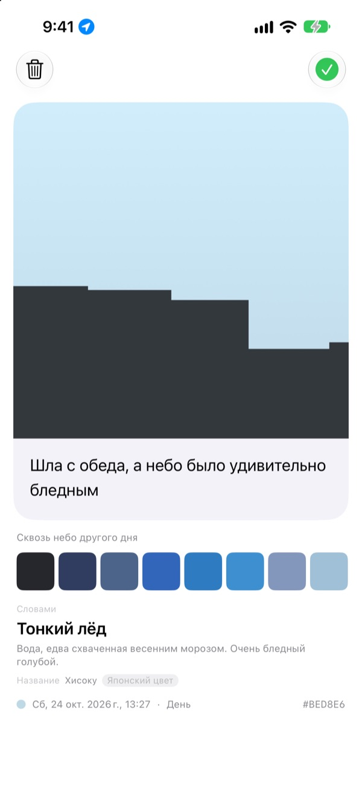
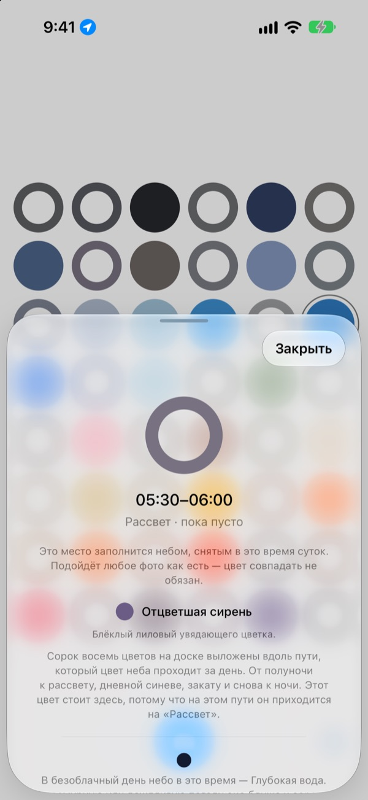
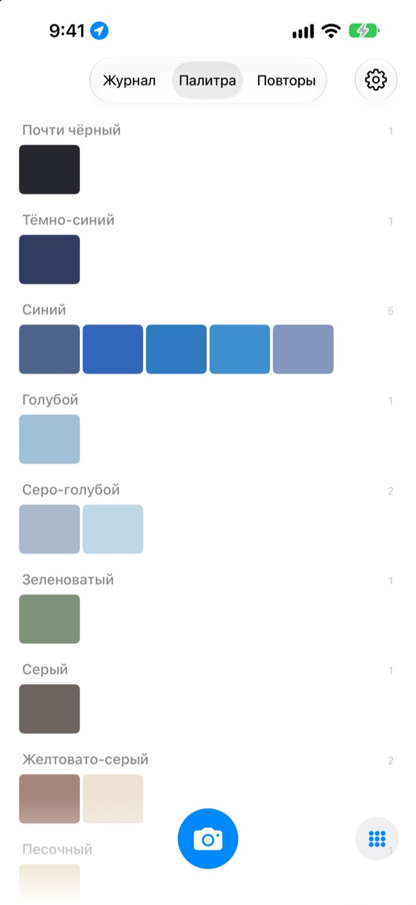

Какого цвета
было небо сегодня?
Сфотографируйте небо, и на доске из сорока восьми клеток клетка этого часа окрасится в пойманный цвет. А ещё цвет получит название, которое легко представить: «Тонкий лёд», «Плитка бассейна», «Спелая хурма».
Бесплатно. Без аккаунта и без входа.

Попробуйте доску сами
Коснитесь клетки, чтобы узнать, к какому времени дня она относится. Добавьте фото неба, и заполнится клетка текущего часа; листайте дни вперёд и смотрите, как меняется доска.
Вы видите небо каждый день, но не помните ни одного цвета
Небо по дороге на работу, небо, когда вы вышли после обеда: к вечеру их цвет уже не вспомнить. А снимки неба, которые вы всё-таки сделали, теряются среди остальных фото в галерее. SkyDex собирает снимки неба как цвета и показывает на одной доске путь, который сегодня прошло небо.
У каждого неба есть имя
Сначала цвет получает название, которое сразу встаёт перед глазами: «Тонкий лёд», «Плитка бассейна», «Спелая хурма». Под ним идёт название с происхождением: корейский цвет, японский цвет, пигмент или веб-цвет.
Если совпадение близкое, приложение пишет «Название», если далёкое, честно пишет «Ближайшее название».

Оставьте строчку
Сразу после снимка открывается карточка. Запишите, о чём вы подумали, глядя на это небо, и строчка снова всплывёт над ним, когда вы коснётесь этой клетки на доске.
Можно наложить на небо этого снимка цвет неба, собранного в другой день, и поделиться результатом как картинкой.

Пустые клетки подсказывают путь
Коснитесь пустой клетки, и вы узнаете, к какому времени дня она относится и какой цвет искать. А ещё приложение скажет, какого цвета небо в этот час в безоблачный день, с учётом восхода и заката там, где вы находитесь.
Цвет не обязан совпадать. Серое пасмурное небо тоже цвет неба этого дня.

Журнал, палитра, повторы
Просматривайте снятое небо по порядку и собирайте цвета в палитры по семействам: синий, серый, песочный. Снимите тот же час в другой день, и два неба встанут рядом.
Виджеты на экране «Домой» сразу показывают «Доску сегодня» и «Небо сегодня».

Начать можно за три шага
- 1
Поднимите глаза
Нажмите кнопку камеры под доской и снимите так, чтобы небо заполнило квадрат.
- 2
Клетка заполняется
Клетка текущего часа окрашивается в пойманный цвет и получает название.
- 3
Оставьте строчку
В открывшейся карточке запишите, о чём вы подумали, глядя на это небо.
Как доска делит день
- Полночь · 00:00–05:00
- шесть клеток
- Рассвет · 05:00–08:00
- шесть клеток
- День · 08:00–16:00
- двенадцать клеток
- Под вечер · 16:00–18:00
- шесть клеток
- Закат · 18:00–21:00
- двенадцать клеток, по одной на 15 минут
- Ночь · 21:00–24:00
- шесть клеток
Около заката, когда небо меняется быстро, клетки идут часто, а глубокой ночью, когда оно почти неподвижно, редко. Наверху доски полночь, и чем ниже, тем дальше идёт день.
Вопросы и ответы
Как заполняются клетки?
Небо, снятое сегодня, занимает клетку того часа, когда вы его сняли, даже если цвет оказался не тем, что вы ждали. Ведь в этот час небо действительно было таким. Небо из прошлых дней встаёт по цвету: если оно достаточно близко к цвету какой-то клетки, то занимает её, и одно небо заполняет только одну клетку.
Вчера клетка была заполнена, а сегодня пуста.
Доска показывает сегодняшний день. Клетки, которые вчерашнее небо заняло по времени, с наступлением нового дня сопоставляются заново, только по цвету. Поэтому в какие-то дни доска почти полна, а в какие-то выглядит пустой. Ваши фото никуда не делись: всё собранное небо хранится в Журнале, а по порядку цветов в Палитре.
Заполненные клетки бледнеют.
Так задумано. Неделю снимок держит свой настоящий цвет, а потом в течение восьми недель медленно выцветает. Он не удаляется и никогда не бледнеет до конца. Снимите небо в это время ещё раз, и клетка сразу вернёт полный цвет. Здесь нет серии, которая может прерваться, и нет счёта, который нужно отыгрывать.
Цвет должен совпадать?
Нет. Здесь нет оценок «прошёл» или «не прошёл». Каждый снимок сохраняется, а серое пасмурное небо тоже цвет неба этого дня.
Зачем приложению геопозиция?
Только для того, чтобы при касании пустой клетки сказать, какого цвета безоблачное небо в этот час, с учётом восхода и заката там, где вы находитесь. Используется лишь приблизительное местоположение с точностью до километра, и координаты не прикрепляются к снимкам. Если откажете, всё будет работать, а точкой отсчёта станет Сеул.
Можно добавить небо из медиатеки?
Да. Небо, выбранное в приложении «Фото» вместо камеры, тоже обрезается до квадрата и заполняет клетку текущего часа, как только что снятое.
Как удалить снимок?
Откройте снимок и нажмите «Удалить» или смахните его влево в Журнале. Он удалится и с устройства, и из iCloud. Если удалить приложение, копия в iCloud останется, и после повторной установки собранное небо вернётся.
Что будет с собранным небом при смене телефона?
Ваше небо хранится в вашем собственном iCloud и переносится на новое устройство, где выполнен вход в тот же Аккаунт Apple. Нет ни аккаунта в приложении, ни сервера, а фото и цвета никогда не отправляются разработчику. Ни рекламы, ни отслеживания.
Это правда бесплатно?
Да, все функции бесплатны. Если приложение понравится, можно оставить разработчику чаевые прямо в нём, но чаевые ничего не открывают.
На каких устройствах работает?
На iPhone с iOS 17.0 или новее, только в вертикальной ориентации.
Нашли ошибку, странное поведение или просто хотите что-то сказать? Пишите на leeo@kakao.com. Если опишете, что вы делали, и укажете версию iOS, найти причину будет гораздо проще.